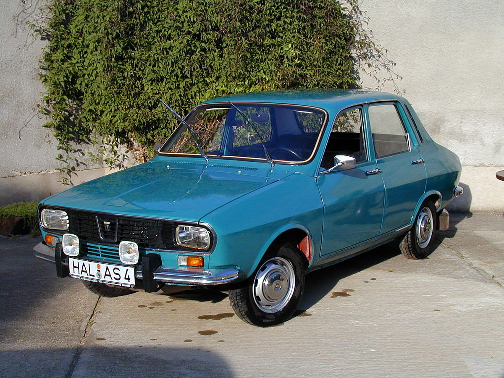
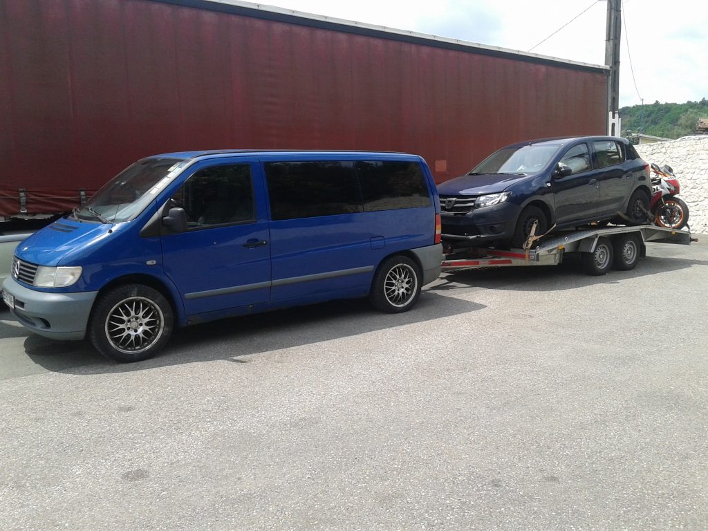

Oferta categoria A,A1,A2: 1490 lei
Condiții de înscriere: Vârsta minimă de la care se poate începe școala pentru categoria A2 este de 17 ani și 9 luni, iar la împlinirea vârstei de 18 ani se poate susține examenul. Orice cursant trebuie să fie apt din punct de vedere psihologic și medical. Cursantul să nu fi fost condamnat pentru infracțiunile prevăzute la Art.24 din O.U.G. 195/2002. Buletin de Identitate / Carte de Identitate. Semnarea contractului de prestări servicii.
Oferta categoria B,B1: 2200 Lei
Vârsta de la care se poate primi permisul B1 este de 16 ani. La școala auto înscrierea se face de la 15 ani și 9 luni, ca la sfârșitul studiilor să fie atinsă vârsta minimă permisă și candidatul să poată fi admis la examen.
Vârsta minimă de la care se permite înscrierea la școala de șoferi pentru categoria B e de 17 ani și 9 luni. Pentru pregătirea teoretică sunt planificate 24 de ore, pentru cea practică - 30 de ore de exersare pe poligon și apoi pe traseu.

Oferta categoria BE: 2700 lei
Permisul BE acordă șoferului dreptul de a conduce un ansamblu cu MTMA totală mai mare de 4.200 kg. Acesta conține un vehicul trăgător B și o remorcă sau semiremorcă de până la 3.500 kg MTMA. Vârsta minimă la care poate fi primit carnetul cu această categorie e de 18 ani. O altă condiție este ca șoferul să dețină autorizația de a conduce mijloace de transport din categoria B.
Stagiu de școlarizare prevede 10 ore de teorie și 10 ore exersare practică. La examenul auto cursantul trebuie să rezolve un chestionar, ce conține 11 întrebări în 15 minute. Pentru promovarea acestei etape sunt necesare 9 răspunsuri corecte. La etapa practică se evaluează aptitudinile și abilitățile de conducere a cursantului.
